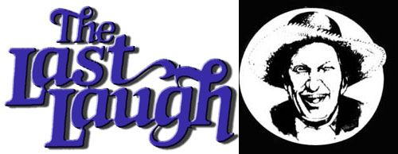

" One of the most annoying things about weather forecasts is that they're not wrong all the time, either.
"Simple rules for saving money. To save half: When you are fired by an eager impulse to contribute to a charity, wait, and count to forty. To save three-quarters: count to sixty. To save it all: count to sixty-five.
Well sir, summer has about wore itself out here at Plumtree Crossin'! An' jist as crocuses 'n' high cricks announce the spring, the onset of autumn has its own observable hallmarks.
There ain't a young'un in the county, fer instance, what hasn't noted (with a sinkin' feelin' in the pit of his er her stomach) thet the ol' blue and yeller "Back To School Sale" sign's gone up in the Gen'ral Store's plate glass winder again ... tellin' about the availability of an assortment of jellybean-colored pencil cases an' them scary-thick packages of bluelined paper.
On t'other hand. the changin' seasons are also accompanied by omens of a more agreeable nature. The gray squirrels out in the Jarvis brothers' woods is steppin' up their activity a notch er two, which causes some folks to think about fresh hick'ry nut bread ... an' inspires other individuals with visions of thet first cold mornin' under the trees, with th' familiar heft of a .22 single-shot stretched across their knees.
An' of course nigh onto ev'ryone from Lick Skillet to Possum Trot Mountain is beginnin' to anticipate the Barren County Fair. As you know, thet partic'lar shindig is jist about the pinnacle of the area's social season, an' most enny man, woman, er child ye'd care to mention-as well as a few whose names is better left unsaid-has got somethin' what they plan to show off over at the fairgrounds.
In point of fact, even the ol' reprobates who swap tall tales in front of the store has got theyselves a tad het up over the comin' festivities. Cleedy McCannon, fer example, is in the process of puttin' the finishin' touches on an assortment of hand-carved bass plugs to enter in the whittlin' competition, whilst Lafe Higgins claimed-jist the other day-thet his flock of geese has finally hatched him out a fer-sure blue ribbon winner.
Ol" Man Bartlett took exception to Lafe's statement, howev'r. "Why," Ott pointed out, "ev'ry one of them blamed birds is uglier than a mud fence covered with toads, wilder'n mountain scenery, an' mean enough to fright the fleas off'n a coon hound. You cain't tell me thet enny of 'em could set an egg an' not hatch out somethin' strange an' scaly."
"Yer right there, Ott," Doc Thromberg tossed in, "an' speakin' of unnatural critters, I'll be danged iffen I didn't hear thet Fletcher Roebuck's boy, Clovis, were goin' to be givin' a speech right after the 4H cattle judgin'."
"I reckon whatever Clovis has to say ought to be kept out there behind the bull stalls," said Lafe. "But don't thet feller ever give up? Why, I thought we'd got ourselves shut of him last winter. He didn't seem to wanta. do nothin' but put 'gone' between him an' Plumtree Crossin', iffen I recall correctly."
''Now, Mister Higgins," cautioned Clarence Smithers, "you know there ain't no future in bankin' on ennything thet two-bit politicker says. He's about as changeable as a forest fire, an' has to carry a notepad jist to keep track of what lies he's been tellin' to who."
"An' jist what does Clovis aim to speak about?" Cleedy wanted to know.
"From what I heerd," answered Newt Blanchard, "he's gonna tell us how we all gotta pull together to make it through the hard times thet're acomin'. "
"Yessir," Due slapped his knee, "I dearly do love political talk. I reckon ol' Clovis figgers on ev'rybody else helpin' him pull his weight ... whilst he limits his work to pullin' on a bottle of fivedollar whiskey."
Ev'ryone agreed thet Doc had prob'ly hit the nail right on the head. An' even though the fellers kin usually pretty much kill an afternoon revilin' the likes of Clovis Roebuck, it were decided thet the gen'ral mood was jist too jovial to linger on such an unsavorythough sometimes comical- subject.
So, after a short recess to buy another round of moon-pies an' Nehi orange, the boys got back to talkin' about the upcomin' festival.
"Is they gonna have thet big ol' ferris wheel again?" young Billy Parsons wanted to know.
"I'll allow as how it'll be there all right," answered Ott, "but Skeeter Ridges, fer one, ain't likely to pass within a buck's jump of the contraption. "
"No sirree," chimed in Newt. "Why, ol' Skeet boarded the wheel last year-after a full day of celebratin'-think in' thet he'd flagged hisself a taxicab to head fer home in.
"It's a blessin' thet his seat weren't more'n two-thirds of the way to the top when the carny man stopped the ride to let another customer on, too. As it were, the fall jist about knocked Skeeter sober ... though he was still convinced thet he were shrewd to git off without payin' the full fare."
"Mister Ridges always has had an interest in partin' with as little money as possible," said Lafe. "Howev'r-with the value of the dollar slippin' like a hog on the cain't imagine why he wants to hang onto his savin's. "
"The way Skeet tells it," chimed in Purvis Jacobs, "his ol' pappy were outs, work more'n he was in, an' the fam'ly got pretty used to eatin' the top of their flapjacks fer breakfast an' savin' the bottoms fer lunch. The upshot of his childhood ain't thet Skeeter is enny more ambitious than his daddy were, but thet he goes through a thicket of the worryin' agonies ev'ry time he has to open thet pocket purse of his'n. I figger he's jist gonna wait till whatever cash he's got salted away gits to be worth less than the paper it's printed on ... at which point he'll be able to figger out ways to use the bills without spendin "em."
"It ain't hard to imagine what at least one of them uses'll be," opined Doc. "But, fer all the fact thet we're jokin' about Skeeter's miserliness, they's not a man in this here bunch what won't walk a mile to save a dime. Why, I remember back when you was a tyke, Purvis Jacobs, an' would risk life 'n' limb climbin' a monster tulip tree, jumpin' over a spiked iron fence, an' landin' amidst a bodacious blackberry bramble ... jist to avoid payin' a nickel to git into the fairgrounds! "
The gents chuckled over thet one fer a spell, and commenced to reelin' off a round of stories about jist how no-count ev'ry member of the assembly had been in his younger days. Ol' Ott, howev'r, kept unusually quiet till the joshin' wore down a spell ... an' then he spoke up.
"Did enny of you worthies happen to mention jist how much it's gonna cost to git into the fair this year?"
"Why, I don't believe we did, Ott, but I reckon thet fee has climbed like most ev'rythin' else. It'll probably set you back upwards of a dollar an'a half to git through the gates now "
The old feller straightened hisself an' hitched up his suspenders.
"Thet's jist what I was afeered of," he said. "Purvis, perzackly where is thet tulip tree you used to climb?"
"Don't keep forever on the public road, going onlywhere others have gone. Leave the beaten path occasionally and dive into the woods. You will be certain to find something you have never seen before. Follow it up. One discovery will lead to another, and before you know it, you will have something worth thinking about. All really big discoveries are the result of thought. "
Alexander Graham Bell
"I affirm that tranquillity is nothing else than a good or dering of the mind."
Marcus Aurelius
|
 |
|
|